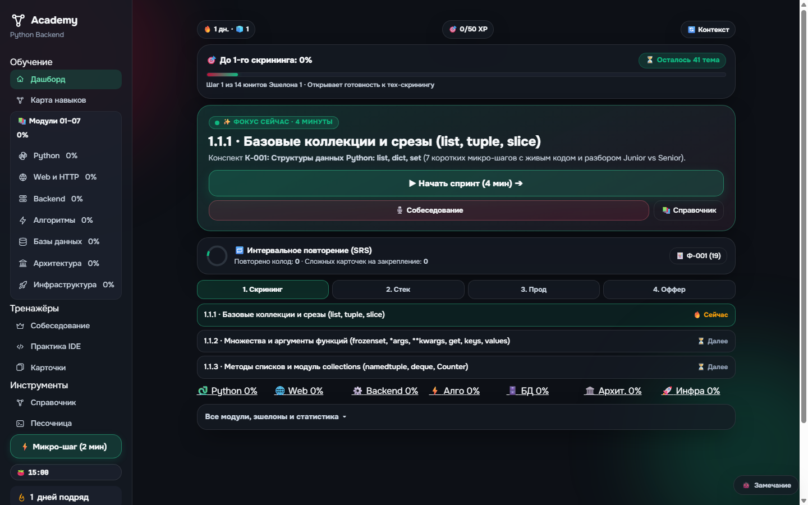
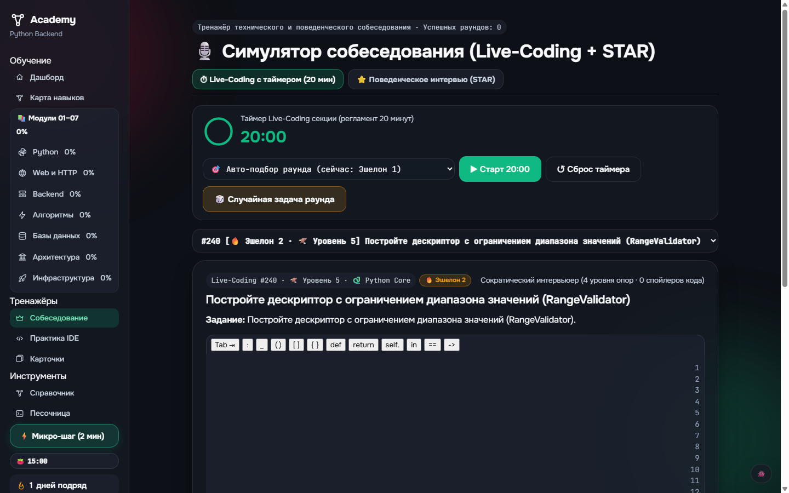

📱 1. Мобильная IDE (Этап 2)
#/practice- Панель быстрого ввода символов (Accessory Bar): виртуальные клавиши
Tab (4 сп),:,_,( ),[ ],{ },def,return,==прямо над клавиатурой смартфона. - Адаптивная высота CodeMirror: автоматическая подгонка высоты редактора при фокусе без выталкивания кнопок запуска тестов.
- Компактный тач-терминал: плавный скролл консоли вывода и аккуратные бейджи успешных тестов.

📖 2. Студия конспектов (Split View)
#/python/skill/...- Десктопный двухколоночный ридер: слева теория микро-шага (60%) с плавной типографикой, справа — интерактивная лаборатория (40%).
- Визуализация памяти CPython: наглядная схема структуры PyObject (указатели, ob_refcnt, буфер list и dict).
- Мини-песочница закрепления: живой редактор кода для быстрой проверки разобранного правила с кнопкой «Run».

🧭 3. Дашборд: Матрица & Карточки
Дашборд #/- Мини-матрица 7 направлений: постоянная полоса из 7 компактных сегментированных прогресс-баров (Python, Web, Backend, Algo, DB, Arch, Infra) прямо на первом экране.
- Круговой SVG-виджет SRS: кольцевой индикатор «19 карточек ждут повторения · ~3 мин» с кнопкой быстрого запуска сессии.
- Чистка сайдбара: группировка 15 монолитных пунктов меню по 3 логическим секциям (Обучение / Тренажёры / Инструменты).

🎙️ 4. Симулятор собеседования
#/mock- Круговой SVG-таймер 20 мин: динамическое кольцо обратного отсчёта со сменой цвета (изумрудный → янтарный → бордовый при < 3 мин).
- Чат Сократического интервьюера: диалоговый поток с Tech Lead (реплики наводящих подсказок Уровней 0–3 без слива готового кода).
- Бейдж темпа и оценки: статус «Использовано подсказок: 1/4 (Strong Junior pace)».
